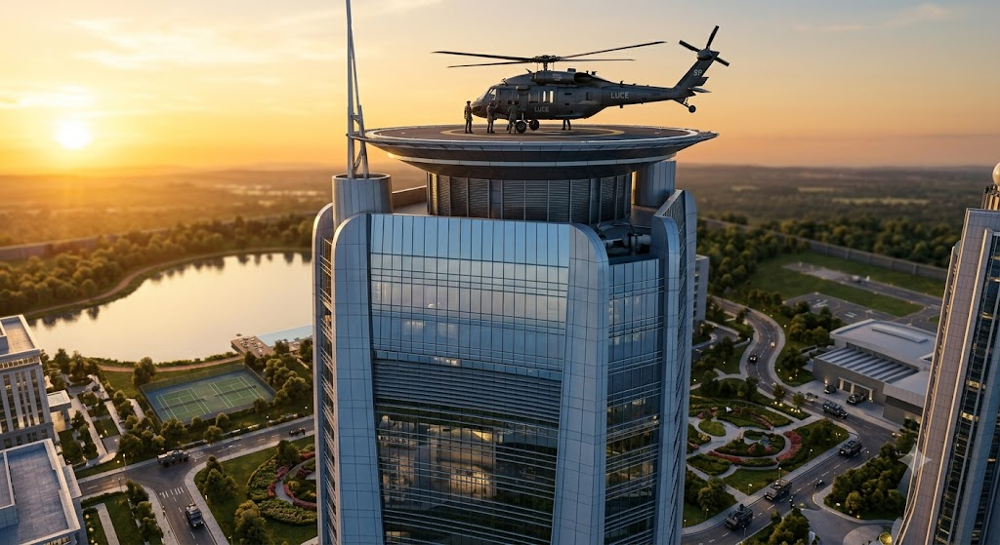

Private Residence (Upper Levels): Master Bedroom Suite
The Zero-CCTV Sanctum of Absolute Privacy and Protection
Positioned within the secluded upper tiers of the House of Eternal Stewardship (Luce), the Master Bedroom Suite spans a magnificent 400-square-meter private sanctuary. Designed with uncompromising standards of personal liberty within the Red Marshal's domain, this suite maintains a strict zero-CCTV policy to guarantee absolute visual privacy. Instead of traditional optical monitoring, the chamber is protected by advanced non-visual threat sensors, including subterranean seismic monitors, ultrasonic intrusion detectors, and passive electromagnetic field analyzers built discreetly into the hand-carved mahogany wall panels.
The interior blends supreme luxury with austere fortification, featuring a custom king-size platform bed draped in rich velvets and gold-threaded silks, a private stone fireplace, and floor-to-ceiling smart-tinted windows overlooking the grand estate perimeters. Integrated climate and atmospheric systems automatically adjust oxygen levels and ambient temperature to optimal physiological standards, ensuring an impenetrable, highly comfortable resting haven for the estate's supreme occupant.
Ultra Luxurious Watch Storage
The Precision-Engineered Chronometer Vault
Housing the estate's collection of rare horological masterpieces, the Ultra Luxurious Watch Storage vault is encased in a rotating, cylindrical vault structure featuring heavy brass reinforcement, polished dark wood paneling, and an immense, gear-driven titanium security door. The interior is lined with rich burgundy leather and fitted with individual automatic watch-winding modules, keeping each mechanical piece under optimal tension and perpetual motion.
Positioned discreetly within the private residential quarters against a backdrop of floor-to-ceiling windows overlooking the fortified compound, the vault merges supreme aesthetic elegance with impenetrable security. Biometric access controls, localized micro-climate humidity regulators, and silent seismic alarms ensure that the Red Marshal's collection remains entirely secure against unauthorized physical or environmental intrusion.
Prayer Room
Dedicated Sacred Sanctuary for Daily Prayers and Spiritual Reflection
The Prayer Room serves as a dedicated sacred sanctuary designed specifically for the Red Marshal's daily prayers and moments of quiet spiritual reflection. Situated within a tranquil and secluded wing of the palace, the room is crafted to offer absolute peace, featuring vaulted ceilings, acoustic dampening panels, and soft, warm architectural lighting that promotes deep focus and tranquility.
Engineered with the estate's signature standard of security and luxury, the space includes discreet biometric access control, climate control tuned for ideal meditative comfort, and soundproofed walls ensuring complete privacy from the bustling operations of the compound. The interior seamlessly blends rich natural materials, subtle sacred geometry, and minimalist elegance to create an atmosphere of profound serenity and reverence.
Private Dining Hall
Exclusive Family Sanctum of the Red Marshal
Carved from the same palatial stone as the main state rooms, the Private Dining Hall is an intimate, secure sanctuary reserved exclusively for the Red Marshal and their immediate family. Shielded from the public eye, the hall features soaring, arched windows with custom blue-and-gold drapery overlooking a secluded, private lake view, identical to the vista in the main conference hall. The space is centered on a refined, dark wood circular dining table, custom-crafted for familial discourse, surrounded by plush, high-backed leather chairs.
The walls are adorned with dark wood paneling and classical tapestries, maintaining the opulent aesthetic of the compound, while a massive, gilded mirror reflects the grand crystal chandelier above. Adjacent to the dining area is a comfortable, secluded lounge space with velvet sofas and a low coffee table, perfect for post-dinner relaxation and intimate conversation. The entire hall is secured by the estate's advanced systems, including discrete bio-scanners at the entrance and non-visual threat sensors, ensuring the highest level of safety and total privacy for the Marshal's domestic life.
Special Rest Room
Intimate Secure Discussion Sanctuary for Close Advisors
Engineered to seamlessly dual-function as both a high-security private rest sanctuary and an ultra-secure tactical discussion chamber, the Special Rest Room is tailored for the Red Marshal's most trusted inner circle and close advisors. The chamber is constructed with advanced acoustic-isolation shielding and active electronic white-noise countermeasures, ensuring that all confidential briefings, strategic debates, and private consultations remain completely impervious to outside eavesdropping or remote surveillance.
The interior blends uncompromising functionality with understated luxury, featuring rich mahogany wall paneling, secure encrypted terminal ports flush-mounted into the conference surfaces, and low-profile recessed ambient lighting. Protected by biometric verification locks and non-visual threat sensors at every entry point, the room guarantees a completely secure, highly confidential environment where pivotal decisions of state and personal governance can be weighed in absolute privacy.
Personal Workplace (Private Study)
The Red Marshal's Sovereign Office and Tactical Command Desk
Conceived as the inner nerve center for executive governance, the Personal Workplace (Private Study) is an exclusive, highly secure private office within the upper levels of the estate. The room is designed with floor-to-ceiling rich mahogany built-in bookshelves, acoustic wall paneling, and massive smart-tinted windows that frame the imposing exterior fortress walls. Centered in the room is an executive command desk crafted from dark burl wood, equipped with encrypted terminals, secure comms arrays, and holographic tactical displays for direct oversight of the Marshal's operations.
Atmospheric and safety parameters match the highest standards of the estate, featuring discrete biometric entry locks, non-visual perimeter threat sensors, and automated electromagnetic shielding. Accentuated by warm recessed lighting, leather executive seating, and subtle classical architectural details, the study maintains an atmosphere of absolute focus, intellectual clarity, and unwavering authority.
Personal Arsenal Vault
Concealed Direct-Access Armory for the Red Marshal
Seamlessly integrated through a concealed biometric panel hidden within the wood-paneled walls of the Master Suite, the Personal Arsenal Vault is an ultra-secure tactical armory designed for immediate crisis response. The chamber is lined with custom-milled carbon-fiber and titanium weapon racks, housing a curated collection of customized sidearms, precision long-range rifles, and specialized personal defense gear, all maintained under precise climate-controlled humidity to preserve peak mechanical performance.
The vault is reinforced with multi-layered blast doors, localized electromagnetic pulse (EMP) shielding, and automated inventory-tracking systems that log every access event. Lit by sharp, recessed white LED arrays that highlight the polished metallic finishes of the armaments, the space ensures that the Red Marshal maintains instant, uncompromised access to personal protection at a moment's notice.
Holographic World Center
Immersive Reality Simulation and Atmospheric Transformation Chamber
The Holographic World Center is an awe-inspiring technological marvel within the estate, engineered to completely transform its internal atmosphere and physical surroundings. Utilizing an advanced matrix of high-power micro-drones and omnidirectional holographic projectors recessed into the vaulted structural grid, the chamber can seamlessly simulate any universe, galaxy, historical time period, or planetary location with absolute fidelity.
Engineered for both high-level tactical strategic simulation and deep personal escapism, the room manipulates light, sound, and localized atmospheric pressure to create an entirely believable, multi-sensory environment. Protected by multi-tier encryption, isolated power grids, and total acoustic baffling, this sanctuary allows the Red Marshal to step beyond the physical bounds of the compound into infinite worlds while remaining encased within absolute security.
Private Film Screening & Movie Theater
The Ultimate Cinematic and Entertainment Sanctuary
Engineered to rival the finest professional cinemas in the world, the Private Film Screening & Movie Theater offers an opulent and fully immersive viewing environment within the estate. The room features tiered, ultra-plush leather reclining seating, bespoke acoustic wood-paneled wall treatments, and a starfield fiber-optic ceiling that creates a sophisticated ambiance of timeless elegance.
At the front of the chamber stands a massive, micro-perforated projection screen paired with state-of-the-art Dolby Atmos surround sound and 8K laser projection technology. Secured by soundproofing and independent access control, this private theater serves as the ultimate retreat for cinematic enjoyment, private presentations, and relaxed evening entertainment for the Red Marshal and invited guests.
Private Bowling Alley & Media Lounge
Exclusive Entertainment and Recreational Sanctuary
The Private Bowling Alley & Media Lounge combines high-end recreation with elite luxury, offering an exclusive space for leisure and casual gatherings within the estate. The chamber features regulation-grade custom bowling lanes with polished synthetic surfaces, ambient reactive LED lighting, and automated pin-setting technology, all integrated seamlessly into the compound's opulent architectural design.
Adjacent to the lanes, the media lounge area is outfitted with plush velvet sectionals, low-profile marble coffee tables, and a sweeping curved display wall broadcasting immersive entertainment or ambient environments. Sound-dampening acoustic wall panels and secure private access ensure that guests can enjoy relaxed competition and socializing in total comfort, completely shielded from the outside world.

Rapid Action Helipad
Tactical Pre-Flight and Immediate Evacuation Deck
Positioned directly adjacent to the Arsenal exit for immediate, unhindered deployment, the Rapid Action Helipad is an elite aviation staging platform engineered for rapid tactical response and executive transport. The reinforced carbon-composite landing pad features integrated magnetic lock-downs, heated de-icing grids embedded beneath the obsidian surface, and high-intensity recessed perimeter lighting to guide aircraft under any weather conditions.
Directly linked to the estate's subterranean defense network, the deck allows the Red Marshal to transition from the secure interior directly into a pre-flight tactical helicopter within seconds. Encircling defense turrets, automated flight-path telemetry systems, and heavy blast shutters ensure total operational security before lifting off into the skies.
Secondary Guest Helipads (Alpha & Beta)
Secure Dual-Landing Aviation Hub for Dignitaries and Visitors
Positioned on a reinforced elevated platform distinct from the primary executive departure zone, the Secondary Guest Helipads (Alpha & Beta) provide secure, high-capacity aviation access for visiting dignitaries, diplomats, and allied personnel. Each pad is equipped with automated ground-guidance telemetry, flush-mounted high-lumen status lighting, and integrated drainage and thermal de-icing matrices designed to maintain flawless operations in any climate.
Monitored continuously by the estate's central security grid, the landing area features dedicated subterranean reception elevators that transport arrivals directly through armored security checkpoints into the compound. Heavy blast baffles and automated perimeter surveillance ensure that guest transport remains completely organized, isolated, and protected without compromising the estate's core tactical zones.
Private Airfield Runway
Secure Long-Range Aviation and Heavy Transport Strip
Engineered to accommodate heavy executive transport aircraft and high-performance long-range jets, the Private Airfield Runway extends across a fortified, unobstructed expanse tailored for absolute privacy and operational readiness. The tarmac is constructed from high-tensile reinforced concrete embedded with thermal heating grids to prevent ice accumulation, flanked by precision flush-mounted runway lights and automated optical guidance systems.
Directly connected to subterranean high-speed transit tunnels leading straight into the compound's core, the airfield is secured by automated anti-air defense arrays, perimeter motion tracking, and heavy blast-resistant hangar facilities. This vital infrastructure ensures the Red Marshal can execute global deployment and receive high-priority cargo completely shielded from external airspace monitoring.
Infinity Pool & Sun Deck
Breathtaking Aquatic Retreat and Panorama Terrace
Perched on the edge of the estate's high cliffs, the Infinity Pool & Sun Deck offers a stunning aquatic sanctuary with panoramic views stretching across the surrounding landscape. The pool features heated crystal-clear water with underwater acoustic systems, mood-reactive fiber-optic lighting, and a seamless edge that visually merges with the horizon.
The expansive surrounding deck is paved in non-slip white granite, furnished with bespoke weather-resistant loungers, private cabanas, and integrated fire features for evening comfort. Shielded by discreet holographic privacy shields and perimeter security scanners, the space delivers total relaxation and sun-drenched luxury in complete seclusion.
Private Lake & Nova Reflection Gardens
Tranquil Waterfront Sanctum and Botanical Oasis
The Private Lake & Nova Reflection Gardens provide a serene and secluded natural escape within the estate, centered around a mirror-like private body of water that captures the surrounding skyline. The meticulously landscaped grounds feature rare exotic flora, winding stone pathways lined with warm recessed lighting, and quiet contemplation alcoves framed by classical architectural pavilions.
Engineered with subtle environmental security measures, the gardens are monitored by covert thermal sensors and acoustic dampening fields that ensure absolute peace and privacy. This harmonious blend of pristine nature and refined landscape design offers the Red Marshal an ideal environment for quiet reflection and peaceful seclusion.
Rose Garden
Botanical Haven and Fragrant Floral Promenade
The Rose Garden is a meticulously curated sanctuary of vibrant color and exquisite fragrance, designed to offer a peaceful outdoor escape within the estate grounds. Featuring geometric boxwood hedges, ornamental stone arches, and hundreds of rare, hand-selected rose varieties in deep crimson, blush pink, and pristine white, the garden presents a stunning visual tapestry.
Meandering cobblestone walkways wind through the floral beds, leading to secluded wrought-iron seating alcoves shaded by trellises. Protected by discrete perimeter security and gentle climate-control misting arrays that preserve optimal bloom conditions, the space blends natural beauty with absolute privacy for the Red Marshal.
Tennis Court & Sports Bay
Championship-Grade Athletic Facility and Multisport Training Arena
Engineered to meet professional tournament standards, the Tennis Court & Sports Bay is an elite athletic facility designed for high-performance training and recreational competition within the estate. The championship-grade court features a multi-layered cushioned acrylic surface optimized for joint protection and perfect ball bounce, surrounded by sleek glass wind-baffles and integrated ball-retrieval systems.
Flanking the main court, the enclosed sports bay offers advanced biometric tracking monitors, automated pitching and training machines, and climate-controlled spectators' viewing galleries finished in brushed titanium and dark wood. Protected by discreet perimeter security fields and overhead retractable weather-shield canopies, the facility ensures uninterrupted athletic training under any environmental conditions while maintaining the uncompromising privacy and luxury demanded by the Red Marshal.
Private Jogging Track
Scenic Endurance Pathway and High-Performance Fitness Circuit
Winding gracefully through the estate's lush private grounds, the Private Jogging Track offers a dedicated, high-performance running circuit tailored for daily endurance training and cardiovascular fitness. The track is constructed from an advanced shock-absorbing composite material that reduces joint impact, engineered with all-weather drainage channels and embedded thermal heating grids to ensure optimal traction in any climate.
Flanked by manicured botanical landscaping, soft architectural accent lighting, and biometric pace-monitoring stations, the course provides a serene yet technologically advanced environment. Shielded entirely from public view by discreet security barriers, acoustic dampening zones, and covert surveillance arrays, the track allows the Red Marshal to exercise in complete privacy, security, and uninterrupted peace.
Integrated Underground Extraction and Emergency Logistics Architecture
Within an ultra-secure 600-acre sovereign compound designed for maximum operational continuity, the subterranean evacuation and rapid transit network functions as the critical lifeblood for survival during active hostile engagements, sieges, or catastrophic breaches. While surface-level corridors, lush botanical gardens, and scenic pathways offer serene everyday transit for the estate's residents, surface routes inevitably present severe tactical vulnerabilities under heavy ballistic or aerial assault. To completely bypass this exposure, the compound is engineered with an extensive, multi-tiered network of armored subterranean tunnels and high-speed transit arteries directly linked to the private residence, the strategic command wing, and the deep underground doomsday vaults.
These hardened evacuation pathways are constructed from reinforced titanium-alloy composite concrete, designed to withstand localized seismic tremors, direct kinetic ordinance impacts, and advanced chemical or biological infiltration attempts. Inside these subterranean tubes, specialized automated transport pods and magnetic levitation rail systems enable the instantaneous, silent relocation of the Red Marshal and close advisors across vast distances of the estate directly to hardened extraction points, such as underground hangar bays, subterranean submarine docks, or concealed runway thresholds, ensuring absolute security, uncompromised readiness, and seamless escape capabilities when every second counts.
Conclusion & Final Overview
The Pinnacle of Secure, Ultra-Luxury Estate Engineering
The compound represents an uncompromising fusion of elite architectural grandeur and absolute operational security. Every zone, from the high-performance training bays and botanical sanctuaries to the subterranean tactical installations, has been meticulously crafted to provide the Red Marshal with unmatched luxury, privacy, and readiness.
Estate-Wide Infrastructure Note: Every single room features high-definition CCTV, environmental sensors, and hidden wallpaper sound boxes for real-time communication with CragNon. The Master Bedroom is the sole exception—strictly camera-free for privacy, but protected by passive non-visual threat sensors.


.jpg)